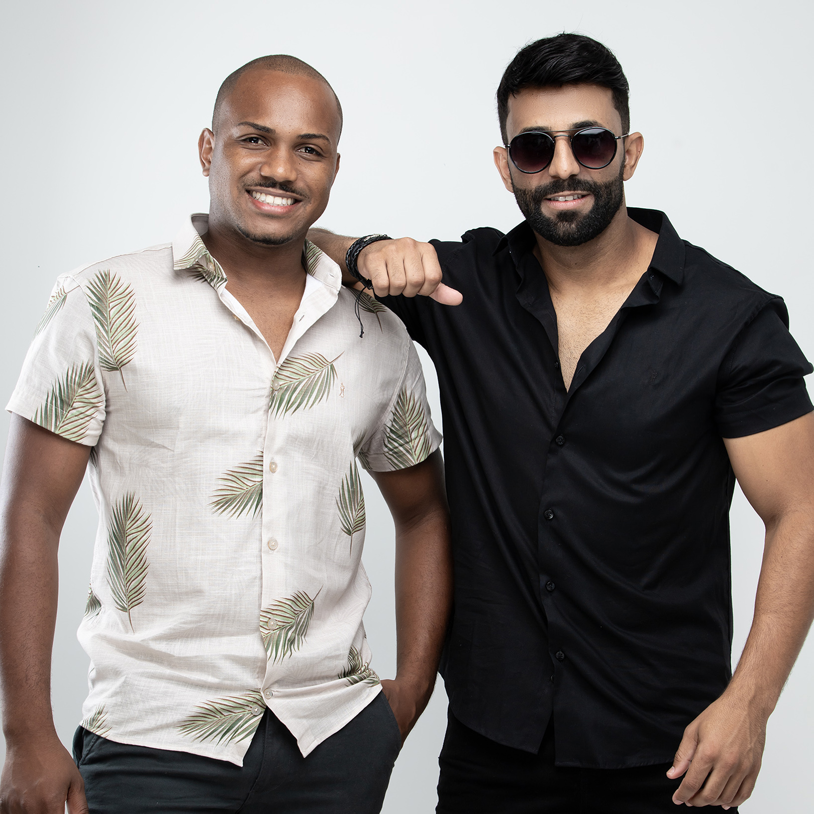

APRESENTAÇÃO
Simão Breno & Júnior são uma dupla sertaneja que combina tradição e modernidade, criando um repertório que agrada a todos os gostos. Com carisma e talento, a dupla transita entre diferentes estilos musicais, trazendo ao público apresentações animadas e inesquecíveis. Com uma forte influência do sertanejo raiz, eles também incorporam elementos do pop rock, axé, pagode, forró, xote e modão em seus shows.

Biografia
Simão Breno & Júnior são primos e nasceram em uma família apaixonada por música. Desde pequenos, sempre estiveram envolvidos com o universo musical, o que os levou a, naturalmente, trilhar esse caminho. O início da carreira aconteceu de maneira espontânea, quando começaram a fazer apresentações improvisadas em barzinhos durante seus passeios. Com o tempo, perceberam a sinergia e o potencial que tinham juntos. Assim, em 2017, decidiram oficializar a dupla e seguir profissionalmente. A primeira grande apresentação ocorreu no Réveillon 2017-2018, marcando o início de uma trajetória promissora. Desde então, a dupla dedicou-se no cenário musical, participando de eventos, festivais, casamentos, formaturas e gravações de videoclipes.